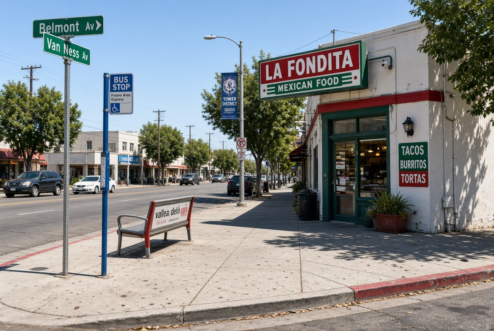
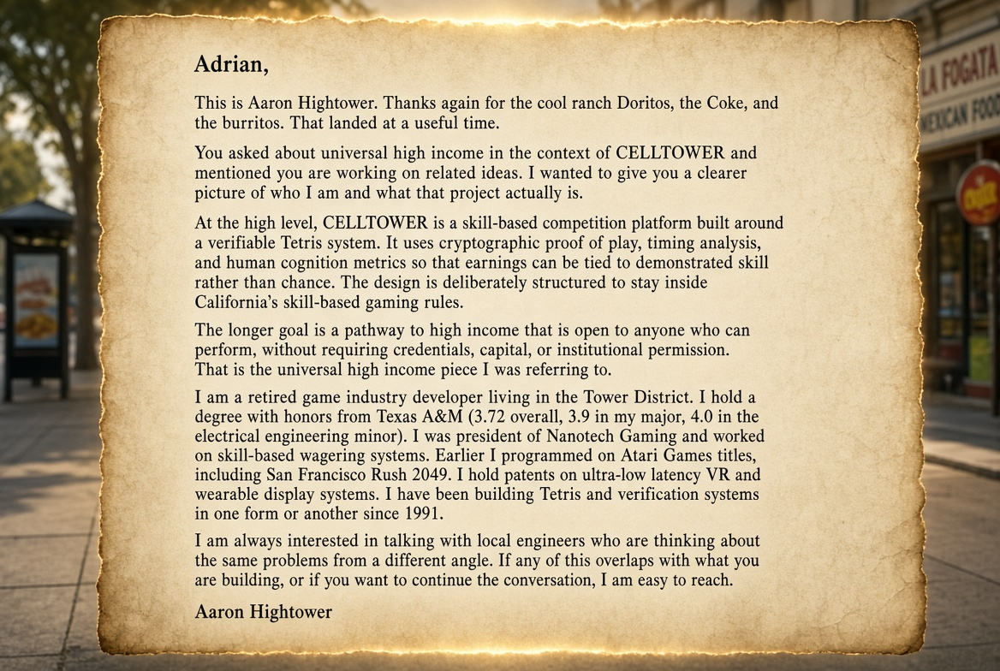
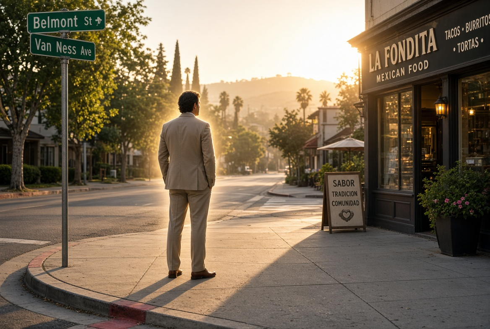
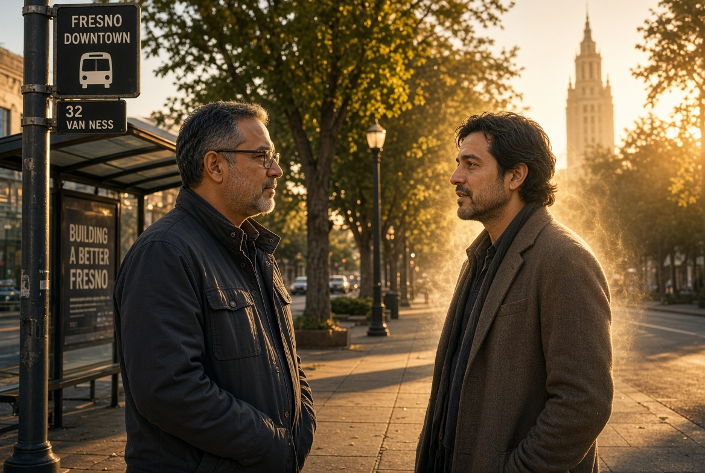
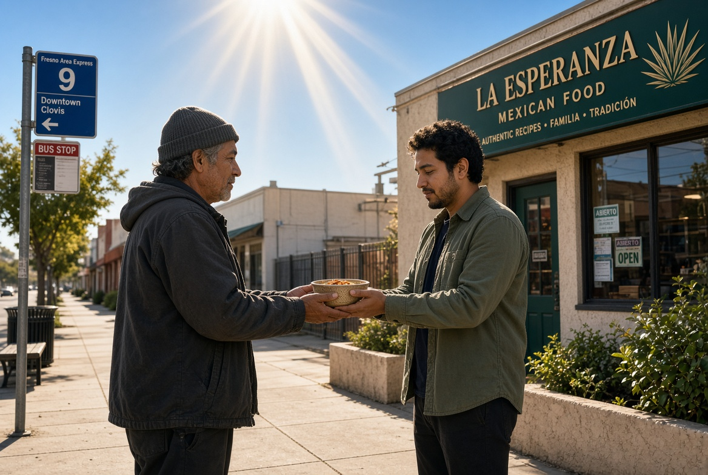
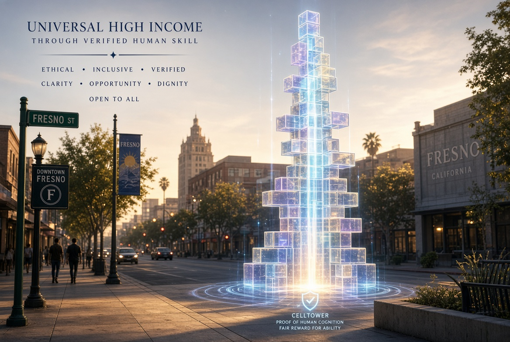

The exchange began with cool ranch Doritos, a can of Coke, and two burritos. It continued into questions of religion, of a 501(c), of nutrition offered with spiritual intent. Then it turned toward systems, skill, and the possibility of high income that does not require permission.
Adrian Hernandez introduced himself. Aaron Hightower answered. Same initials. Different paths. One conversation on a Fresno sidewalk that carried more weight than the food itself.

The Letter Itself
What follows is not a claim of superiority. It is the opposite: a deliberate decision to place every relevant fact in the open so that any future conversation begins from clear ground rather than assumption.

Best Foot Forward
There were implications in the air about ethical standing and spiritual authority. Aaron’s response is not to contest those implications. It is to present the record of a life spent building systems that reward verified human performance rather than credentials, capital, or institutional blessing.
Texas A&M with honors. A 3.72 overall GPA, 3.9 in the major, 4.0 in the electrical engineering minor. President of Nanotech Gaming. Atari Games programmer on San Francisco Rush 2049. Holder of patents on ultra-low latency wearable display systems. Builder of CELLTOWER.

Spiritual Powers and Ethical Weight
The conversation touched spiritual powers. In that moment the proper response is not to claim higher ground. It is to meet the seriousness of the topic with equal seriousness of character.
The food was given. The questions were asked. The reply is offered in the same spirit of open exchange: full context, no concealment, and an invitation to continue if the work of verified skill and fair reward holds interest.

The Humble Beginning
Nutrition was offered in the name of something larger. That act is acknowledged without irony. The follow-up does not diminish it. It simply places the technical and ethical record beside it so that both men can see the full field.

Universal High Income Through Verified Skill
CELLTOWER is a mobile-first platform built on a verifiable Tetris system. Cryptographic proof of play. Timing analysis. Human cognition metrics. The architecture is designed so that earnings can be tied to demonstrated skill under California law rather than chance.
The longer horizon is a pathway to high income that remains open to anyone who can perform. No requirement for credentials, capital, or institutional permission. That is the meaning of the phrase that drew Adrian’s attention.

An Open Door
This page exists so that the context is complete and permanent. Nothing is hidden. Nothing is overstated. The invitation remains exactly as written in the letter: if the work overlaps with what Adrian is building, or if further conversation is desired, Aaron is easy to reach.
The sidewalk at Belmont and Van Ness held a short meeting between two men who share initials and a willingness to speak about higher things. The rest is offered in writing, with care, and with the ethical façade held as high as the conversation itself required.